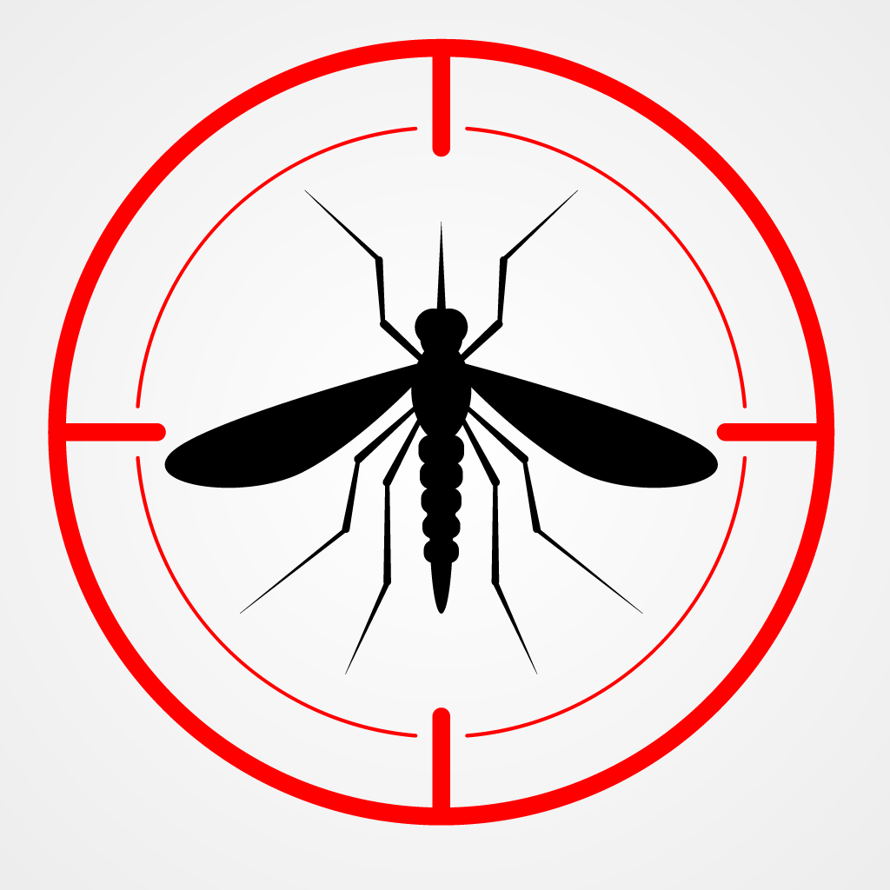

O Aedes aegypti é um mosquito de origem africana, reconhecido por suas listras brancas no corpo e nas pernas. Ele é o principal transmissor de doenças como dengue, zika, chikungunya e febre amarela urbana. Seu ciclo de vida depende de água parada limpa, onde deposita seus ovos. A picada geralmente ocorre durante o dia, principalmente ao amanhecer e ao entardecer.
O Aedes aegypti é um mosquito pequeno, com corpo escuro e listras brancas nas pernas e tórax. Ele é rápido, silencioso e costuma picar durante o dia, principalmente ao amanhecer e entardecer.
O Aedes aegypti é o principal transmissor de doenças como dengue, zika vírus, chikungunya e febre amarela urbana. Essas enfermidades podem causar sintomas como febre alta, dores no corpo, manchas na pele, conjuntivite, entre outros, e em casos graves podem levar a complicações sérias de saúde, exigindo atenção médica imediata.
A melhor forma de combater o Aedes aegypti é eliminar os locais com água parada, que servem de criadouros para o mosquito. Medidas como tampar caixas d’água, limpar calhas, guardar garrafas com a boca para baixo e evitar o acúmulo de água em vasos de plantas são essenciais. Além disso, o uso de repelentes, telas nas janelas e roupas que cubram o corpo ajudam a evitar as picadas.
